HYD · 실습 가이드Cypher로 그래프를 생성·조회·수정·삭제하고 설비 관계 탐색하기
연결된 대상을 확인하고, 결과의 근거를 원자료와 대조합니다.
01 예제 준비하고 연결하기
먼저 Docker Desktop을 실행합니다. 이 실습의 데이터베이스가 Docker에서 돌아갑니다.
「실습 시작」 도구를 쓴다면 관계 조회 실습을 고르고 새로 시작을 누르세요. 예제가 준비되고 이 가이드와 Neo4j Browser가 열리니 아래 연결 창으로 갑니다.
명령과 질의는 손으로 치지 말고 블록의 복사 단추로 붙여 넣으세요. 손으로 옮기면 따옴표나 기호 하나만 틀려도 실행되지 않습니다.
ZIP으로 받았다면 풀린 02회차/랩/02일차_실습1_관계조회 폴더를 파일 탐색기로 엽니다. 주소 표시줄에 powershell을 입력하고 Enter를 누르면 그 폴더에서 PowerShell 창이 열립니다.
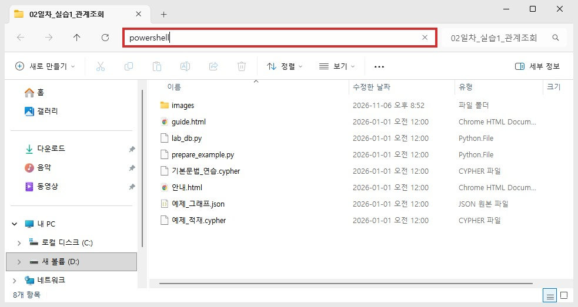
실습 폴더를 연 파일 탐색기의 주소 표시줄에 powershell을 넣은 모습. Enter를 누르면 이 폴더에서 PowerShell이 열립니다 · 누르면 크게 보기다음 명령을 실행하세요.
PowerShell · 이 실습 폴더
python prepare_example.py
예제 준비 완료: 노드 20개 · 관계 19개가 표시됩니다. 이 예제는 HYD-01 한 대의 설비 구성입니다.
PowerShell · 이 실습 폴더
python lab_db.py
랩 DB 준비 완료와 Connect URL 주소가 표시되고, 브라우저에 연결 창이 열립니다.
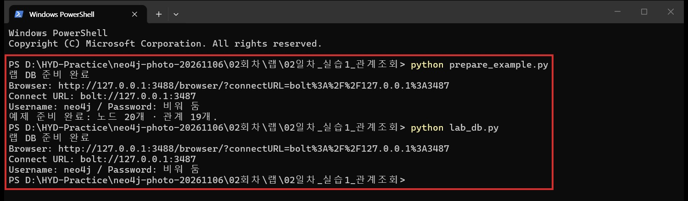
두 명령의 출력. 첫 명령의 끝줄에 예제 준비 완료: 노드 20개 · 관계 19개, 두 번째 명령에 Connect URL이 나옵니다. 포트 번호는 PC마다 다릅니다 · 누르면 크게 보기열린 연결 창의 Protocol이 bolt://이고 Connection URL이 PowerShell 또는 「실습 시작」 창에 표시된 연결 주소와 같은지 봅니다. 칸이 비어 있다면 표시된 주소의 127.0.0.1:포트 부분을 넣습니다. Database user에 neo4j를 넣고 Password는 비워 둔 채 Connect를 누르세요.
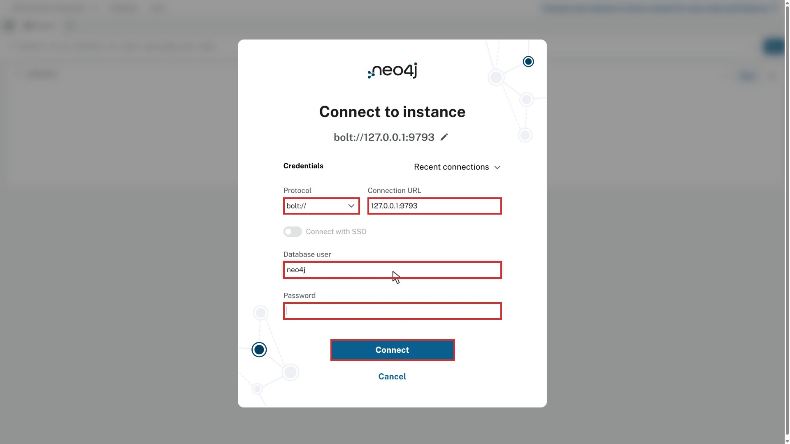
연결 창의 주소 · 사용자 · 비밀번호 칸과 Connect 단추. 주소는 자신의 화면에 표시된 연결 주소와 대조합니다 · 누르면 크게 보기연결되면 아래 카드에 Connected to bolt://127.0.0.1:포트가 나옵니다.
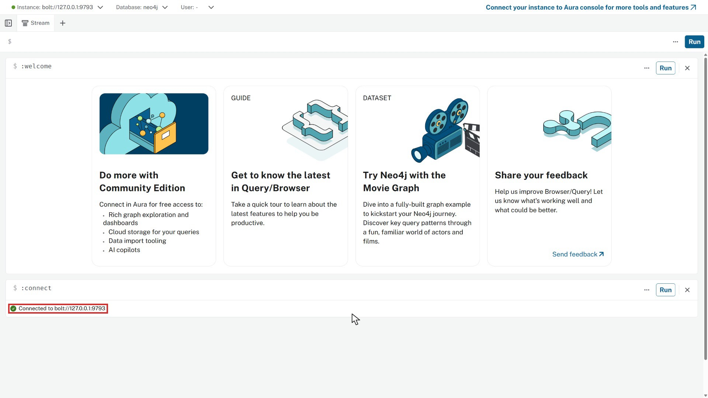
연결 뒤 아래 카드의 Connected to 문장 · 누르면 크게 보기위쪽 입력칸에 :clear를 넣고 Enter를 눌러 안내 카드를 비웁니다. 화면의 카드만 지우고 데이터베이스는 그대로입니다.
이 주소는 지금 연 실습 전용 데이터베이스입니다. 아래에서 만든 노드와 관계는 여기에 저장됩니다. 포털 지식 지도는 별도의 기준 데이터베이스에서 읽습니다.
02 노드 만들고 RETURN으로 그래프 보기
연습용 노드 두 개를 만들고, 만든 노드를 조회해 그래프로 봅니다. Browser 위쪽 입력칸에 다음 문장을 붙여 넣고 Run을 누르세요. CREATE는 새 노드를 만듭니다. 이 생성 문장은 한 번만 실행합니다. 다시 실행하면 같은 노드가 하나씩 더 생기기 때문입니다.
Neo4j Browser 입력 칸
CREATE (a:연습장치 {id:'basic-A', name:'연습 펌프', score:40}),
(b:연습장치 {id:'basic-B', name:'연습 팬', score:70});
Created 2 nodes가 나옵니다. RETURN이 없어 그래프는 표시되지 않지만 노드는 생성됐습니다.
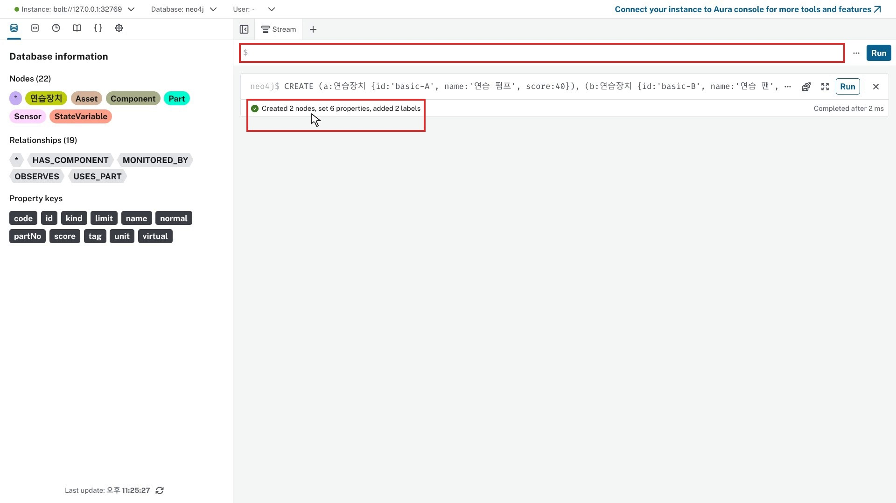
RETURN 없이 실행한 생성 결과 안내 · 누르면 크게 보기CREATE를 다시 실행하지 않고 MATCH로 만든 노드를 찾습니다. RETURN n으로 노드 자체를 받습니다.
Neo4j Browser 입력 칸
MATCH (n:연습장치)
RETURN n;
Graph에 연습 펌프와 연습 팬 두 노드가 나타납니다. 관계는 아직 없습니다.
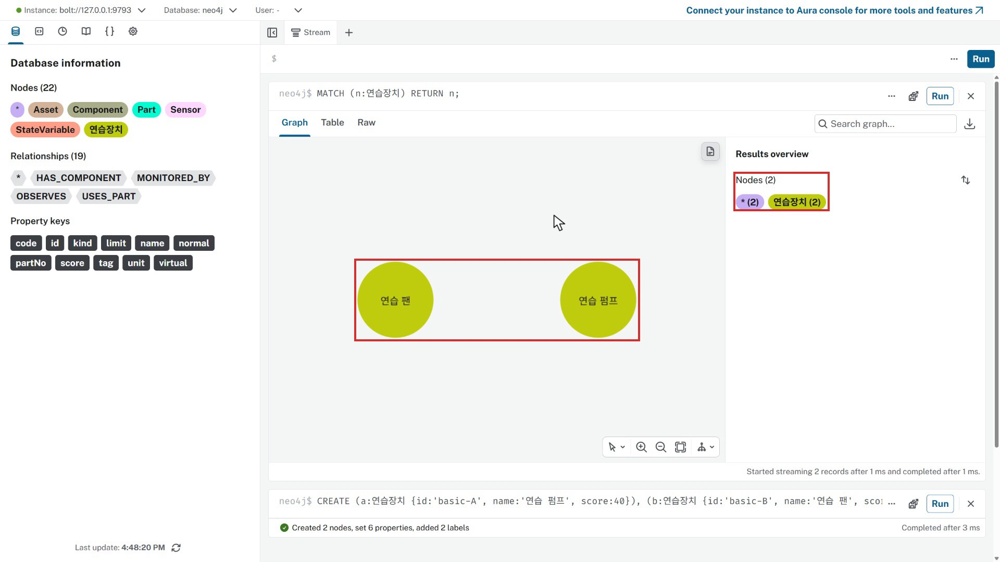
만든 두 노드를 MATCH와 RETURN으로 확인 · 누르면 크게 보기Stream 탭 왼쪽의 패널 단추로 왼쪽 도구 패널을 접고, 그래프 오른쪽 아래 Zoom to fit을 누릅니다. 연습 펌프를 클릭해 오른쪽 Node details를 확인하세요.
레이블은 연습장치, id는 basic-A, name은 연습 펌프, score는 40입니다. n은 조회 문장의 변수입니다.
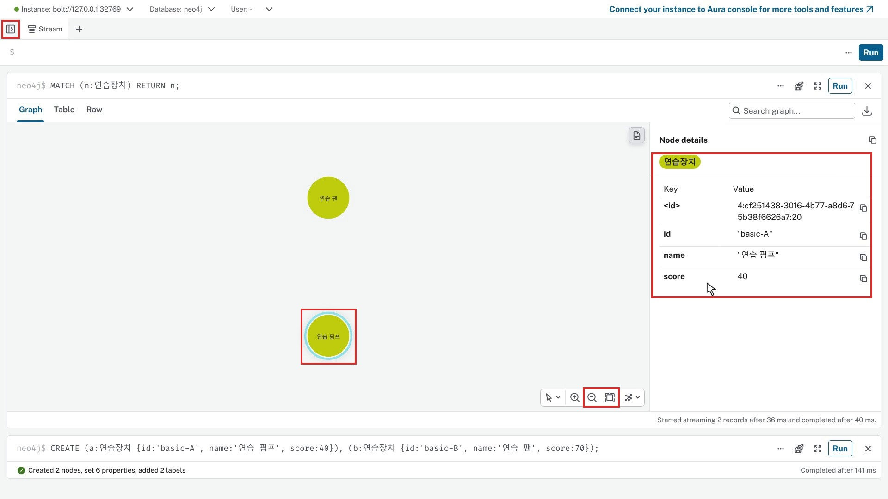
패널을 접고 화면을 맞춘 뒤 펌프 노드를 클릭해 레이블과 속성 확인 · 누르면 크게 보기03 같은 노드를 그래프와 표로 조회하기
화면을 비워도 저장된 노드가 남는지 보고, 같은 노드를 표로도 받아 봅니다. :clear를 실행해 앞 카드를 비웁니다. 데이터는 삭제되지 않습니다. MATCH로 저장된 노드를 다시 찾으세요.
Neo4j Browser 입력 칸
MATCH (n:연습장치)
RETURN n;
두 노드가 다시 나옵니다.
이번에는 노드 대신 이름과 점수를 반환합니다. AS는 열 이름, ORDER BY는 정렬 기준입니다.
Neo4j Browser 입력 칸
MATCH (n:연습장치)
RETURN n.name AS name,n.score AS score
ORDER BY score;
펌프 40 · 팬 70의 두 행이 나옵니다. 노드·관계·경로는 Graph로, 속성값은 Table로 확인합니다.
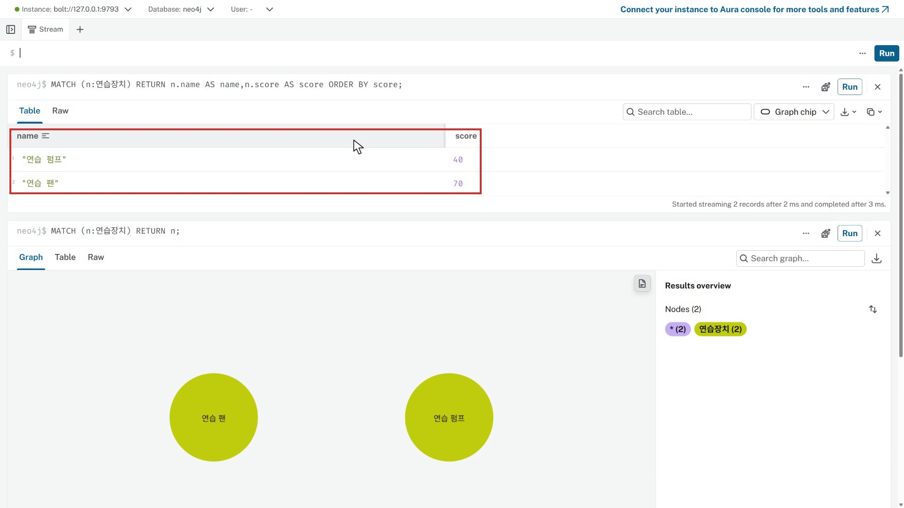
같은 노드의 이름과 점수만 표로 받기 · 누르면 크게 보기04 조건을 바꾸고 그래프 비교하기
WHERE로 조건에 맞는 노드만 고르고, 조건을 바꿔 결과를 비교합니다. WHERE에 score가 50 이상이라는 조건을 넣습니다.
Neo4j Browser 입력 칸
MATCH (n:연습장치)
WHERE n.score >= 50
RETURN n;
팬 한 노드만 나타납니다. 펌프는 삭제되지 않았습니다.
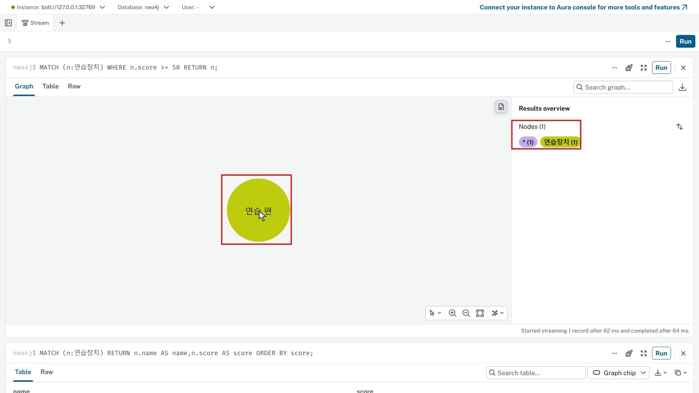
조건을 만족하는 팬만 조회 · 누르면 크게 보기50을 30으로 바꿔 실행합니다.
Neo4j Browser 입력 칸
MATCH (n:연습장치)
WHERE n.score >= 30
RETURN n;
펌프와 팬 두 노드가 다시 나타납니다.
카드를 정리하고 이름 조건을 OR로 묶은 뒤 AND로 점수 조건을 붙입니다.
Neo4j Browser 입력 칸
MATCH (n:연습장치)
WHERE (n.name='연습 펌프' OR n.name='연습 팬')
AND n.score >= 50
RETURN n;
두 조건이 모두 맞는 팬 하나가 나옵니다.
같은 조건에서 괄호만 뺍니다.
Neo4j Browser 입력 칸
MATCH (n:연습장치)
WHERE n.name='연습 펌프' OR n.name='연습 팬'
AND n.score >= 50
RETURN n;
펌프와 팬 두 개가 나옵니다. AND가 OR보다 먼저 묶여 펌프는 점수 조건 없이 통과합니다. 두 장치 모두에 점수 조건을 적용하려면 앞의 괄호 있는 식을 씁니다.
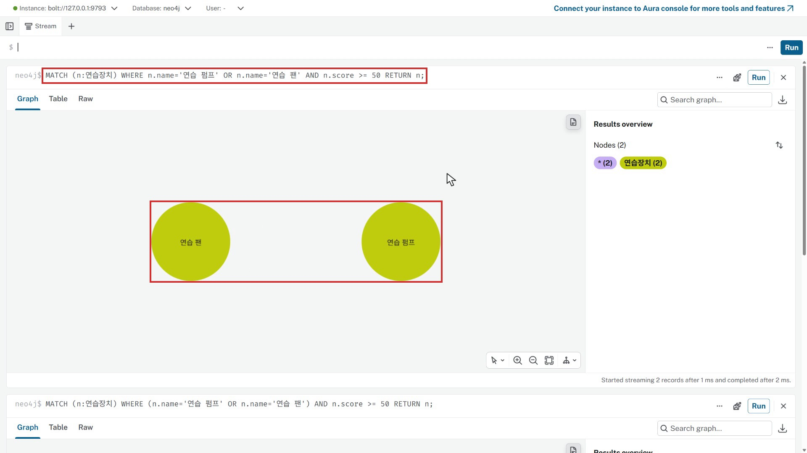
괄호를 뺀 식의 결과: 펌프도 함께 나옴 · 누르면 크게 보기05 센서를 만들고 관계 연결하기
센서 노드를 하나 더 만들고 펌프와 관계로 잇습니다. :clear로 카드를 정리합니다. MERGE는 적은 패턴이 있으면 찾아 쓰고 없으면 만듭니다. SET은 속성값을 지정합니다.
Neo4j Browser 입력 칸
MERGE (s:연습센서 {id:'basic-S1'})
SET s.name='연습 온도 센서', s.unit='℃'
RETURN s;
연습 온도 센서 하나가 나타납니다.
같은 MERGE·SET을 다시 실행하고 센서 수를 확인합니다. WITH는 앞 처리에서 다음 절로 이어 줍니다.
Neo4j Browser 입력 칸
MERGE (s:연습센서 {id:'basic-S1'})
SET s.name='연습 온도 센서', s.unit='℃'
WITH s
MATCH (n:연습센서)
RETURN count(n) AS sensor_count;
sensor_count는 1입니다. 한 사람이 순서대로 반복 실행한 결과이며, 동시 등록의 고유성 보장은 유일 제약과 구분합니다.
펌프와 센서를 찾아 관측 관계로 연결합니다.
Neo4j Browser 입력 칸
MATCH (p:연습장치 {id:'basic-A'}),(s:연습센서 {id:'basic-S1'})
MERGE (p)-[r:관측]->(s)
RETURN p,r,s;
노드 2개 · 관계 1개입니다. p·s는 노드 변수, r은 관계 변수, 관측은 관계 유형입니다. 아래에 「This query builds a cartesian product」 안내가 보여도 실패가 아닙니다.
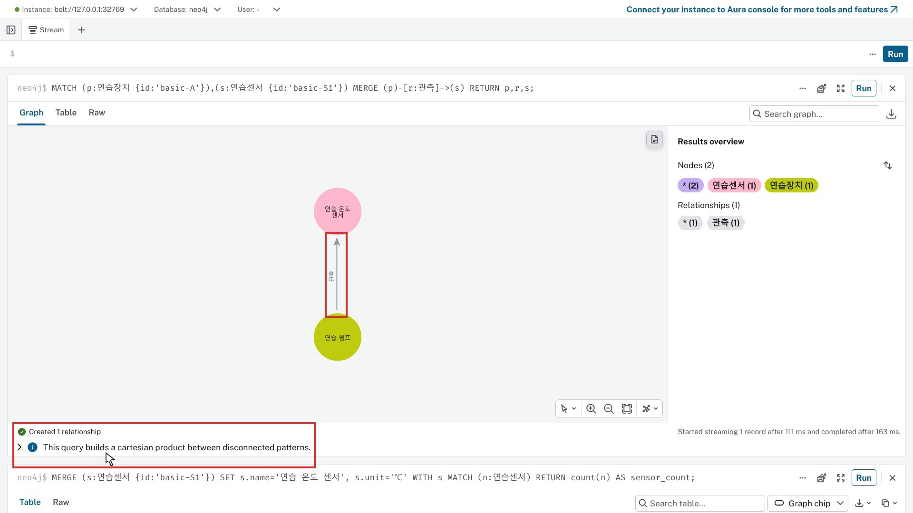
펌프와 센서를 연결한 관측 관계 · 누르면 크게 보기빈 곳을 눌러 선택을 풀고 Zoom to fit으로 맞춘 뒤 두 원 사이의 관측 선을 클릭합니다.
오른쪽 제목이 Relationship details로 바뀌고 관계 유형 관측이 보입니다.
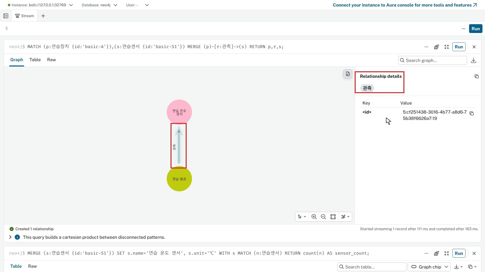
관측 선을 클릭해 관계 정보 확인 · 누르면 크게 보기06 속성을 수정하고 연결 확인하기
연결은 그대로 둔 채 센서의 이름 속성만 바꿉니다. 카드를 정리하고 id가 basic-S1인 센서의 이름만 바꿉니다.
Neo4j Browser 입력 칸
MATCH (s:연습센서 {id:'basic-S1'})
SET s.name='연습 유온 센서'
RETURN s;
노드에 표시되는 이름이 연습 유온 센서로 바뀝니다.
빈 곳에서 선택을 풀고 Zoom to fit을 누른 뒤 센서를 클릭해 속성을 확인하세요.
id는 basic-S1, unit은 ℃로 유지되고 name만 바뀝니다.
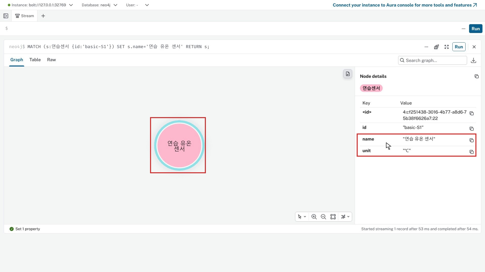
같은 센서의 이름 속성 수정 · 누르면 크게 보기경로 전체를 p에 담아 반환합니다.
Neo4j Browser 입력 칸
MATCH p=(:연습장치 {id:'basic-A'})-[:관측]->(:연습센서 {id:'basic-S1'})
RETURN p;
펌프와 이름을 바꾼 센서가 여전히 관측 관계로 연결돼 있습니다.
07 관계만 삭제하고 노드는 남기기
관계를 지워도 양 끝 노드는 남는지 봅니다. 카드를 정리한 뒤 관측 관계를 찾아 DELETE r로 관계만 삭제합니다.
Neo4j Browser 입력 칸
MATCH (p:연습장치 {id:'basic-A'})-[r:관측]->(s:연습센서 {id:'basic-S1'})
DELETE r
RETURN p,s;
펌프·센서 두 원은 남고 연결선은 없어집니다.
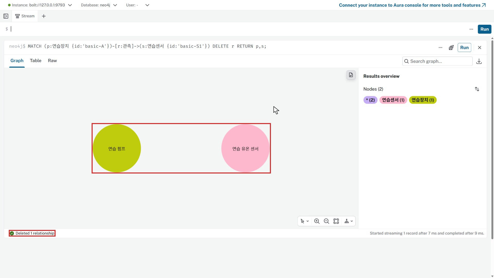
관계 삭제 후 남은 두 노드 · 누르면 크게 보기다음 삭제 방법을 비교하기 위해 남아 있는 두 노드 사이를 다시 연결합니다.
Neo4j Browser 입력 칸
MATCH (p:연습장치 {id:'basic-A'}),(s:연습센서 {id:'basic-S1'})
MERGE (p)-[r:관측]->(s)
RETURN p,r,s;
관측 선 하나가 다시 생깁니다. 새 노드를 만든 것은 아닙니다.
08 노드 삭제와 정리 확인하기
연결된 노드와 연결 없는 노드를 각각 지우고, 연습 데이터가 남지 않았는지 다시 셉니다. DETACH DELETE로 연습 센서와 그 연결을 함께 삭제합니다.
Neo4j Browser 입력 칸
MATCH (s:연습센서 {id:'basic-S1'})
DETACH DELETE s
RETURN count(s) AS removed_sensors;
removed_sensors는 1입니다.
연습 데이터를 다시 조회합니다. 이전 카드는 실행 당시 결과이므로 맨 위에 새로 생긴 카드를 봅니다.
Neo4j Browser 입력 칸
MATCH (n)
WHERE n:연습장치 OR n:연습센서
RETURN n;
펌프와 팬 두 노드만 남습니다. 센서와 관측 관계는 없습니다.
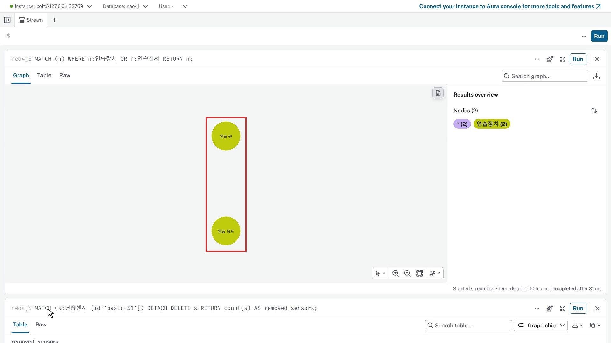
센서 삭제 뒤 새 조회로 확인한 장치 두 개 · 누르면 크게 보기관계가 없는 두 장치를 일반 DELETE로 삭제합니다.
Neo4j Browser 입력 칸
MATCH (n:연습장치)
WHERE n.id IN ['basic-A','basic-B']
DELETE n
RETURN count(n) AS removed_devices;
removed_devices는 2입니다.
연습 노드 수를 다시 셉니다.
Neo4j Browser 입력 칸
MATCH (n)
WHERE n:연습장치 OR n:연습센서
RETURN count(n) AS remaining_practice_nodes;
remaining_practice_nodes는 0입니다. 준비된 설비 20노드 · 19관계는 유지됩니다.
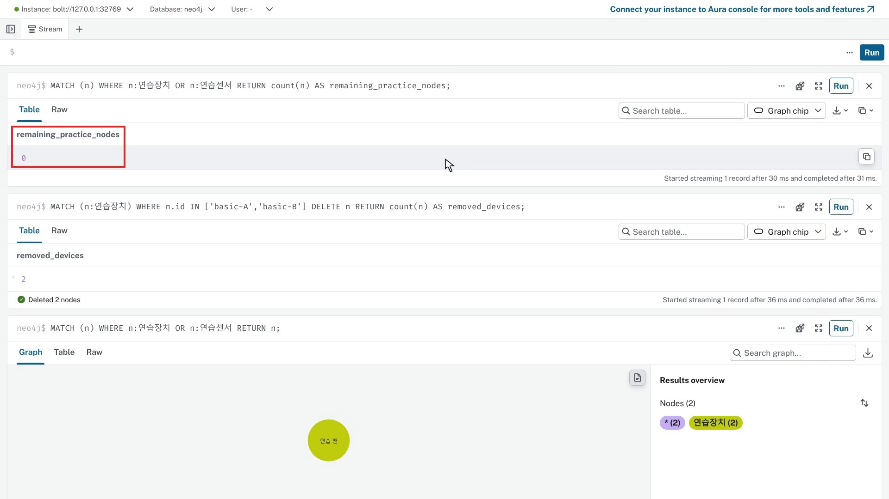
연습 데이터가 0개인지 재조회 · 누르면 크게 보기:clear로 카드를 비운 뒤 아래 설비 예제로 이어갑니다. 실행 문장은 기본문법_연습.cypher에도 있습니다.
09 전체 설비 지도 읽기
준비된 설비 예제 전체를 한 번에 펼쳐 봅니다. Browser 위쪽 입력칸에 문장을 붙여 넣고 Run을 누르세요. HYD-01에서 한 단계부터 세 단계까지 이어지는 경로를 봅니다.
Neo4j Browser 입력 칸
MATCH p=(a:Asset {code:'HYD-01'})-[*1..3]->(n)
RETURN p;
왼쪽 패널과 그래프 상세 창은 접어 둡니다. 그래프 오른쪽 아래 맨 끝의 배치 단추를 눌러 Hierarchical layout을 고르고, 그 옆 Zoom to fit을 누르세요.
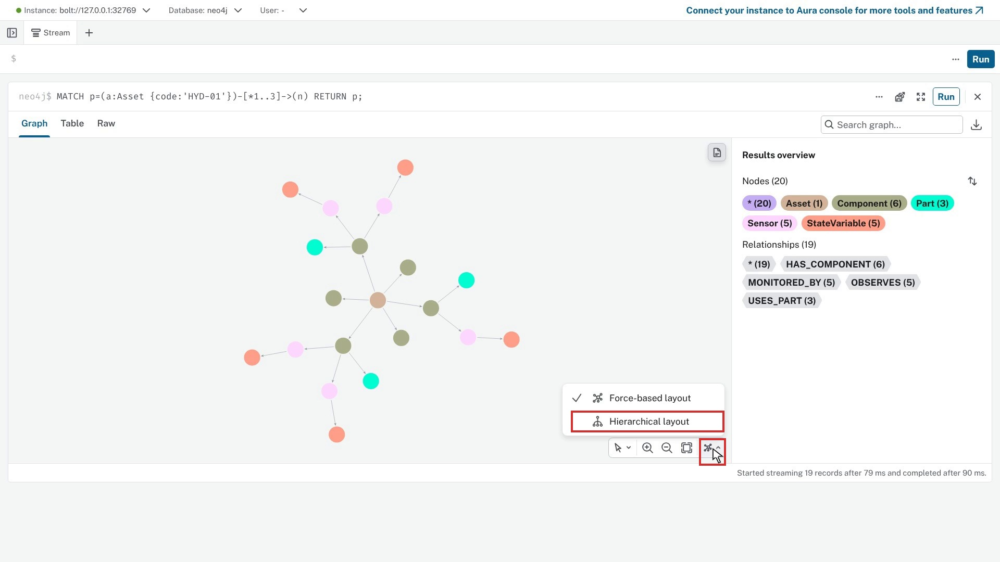
배치 단추를 눌러 Hierarchical layout 고르기 · 누르면 크게 보기설비 아래 구성요소가 있고, 구성요소에서 센서·부품으로 갈라집니다. 센서 아래에는 물리량이 있습니다. 전체 노드 20개 · 관계 19개입니다.
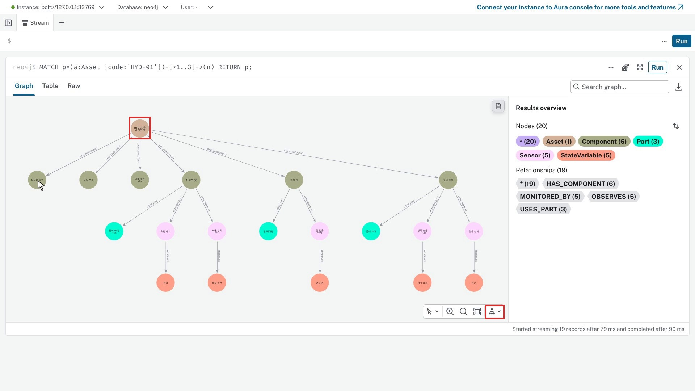
설비 → 구성요소 → 센서·부품 → 물리량 · 누르면 크게 보기상세 창을 열고 빈 배경을 클릭한 뒤 Zoom to fit을 누르세요. 빈 배경을 끌어 위치를 옮기고 노드 위에서 휠을 올려 확대합니다. HYD-01과 오일 쿨러를 차례로 클릭해 오른쪽 Node details를 읽으세요.
HYD-01은 Asset, 오일 쿨러는 Component입니다. 쿨러의 id는 comp:cooler입니다.
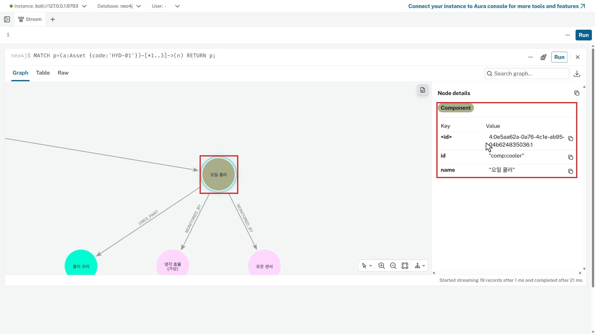
오일 쿨러 선택과 식별자·이름 확인 · 누르면 크게 보기10 쿨러 하나를 쿼리로 찾기
상세 창에서 읽은 쿨러의 id로 그 노드 하나만 직접 찾습니다. 입력칸에 :clear를 넣고 Enter를 눌러 앞 카드를 비운 뒤 다음 문장을 실행하세요. :clear는 DB 데이터를 삭제하지 않습니다.
Neo4j Browser 입력 칸
MATCH (c:Component {id:'comp:cooler'})
RETURN c;
c는 찾은 노드를 가리키는 변수, Component는 노드의 레이블입니다. id는 속성 이름, comp:cooler는 찾을 속성값입니다. 그림에 표시된 오일 쿨러는 name 속성값입니다.
빈 곳을 누르고 Zoom to fit을 누른 뒤 쿨러 노드를 클릭해 id와 name을 확인하세요.
노드 하나가 나오며 id는 comp:cooler, 이름은 오일 쿨러입니다. 관계가 사라진 것이 아니라 이번 결과에 노드만 반환한 것입니다.
11 센서와 관계를 클릭해서 읽기
쿨러에 어떤 센서가 붙어 있는지 관계까지 함께 받아 봅니다. 입력칸에 :clear를 넣고 Enter를 눌러 앞 카드를 비운 뒤 다음 문장을 실행하세요.
Neo4j Browser 입력 칸
MATCH (c:Component {id:'comp:cooler'})-[r:MONITORED_BY]->(s:Sensor)
RETURN c,r,s;
c와 s는 노드 변수, r은 관계 변수입니다. Component·Sensor는 노드 레이블, MONITORED_BY는 관계 유형입니다.
쿨러 1개 · 센서 2개, 노드 3개 · 관계 2개입니다.
빈 곳을 누르고 Zoom to fit을 누른 뒤 유온 센서를 클릭해 tag·unit·virtual을 읽고 냉각 효율 노드와 비교하세요.
유온 센서는 TS1 · ℃ · virtual=false입니다. 냉각 효율은 CE · % · virtual=true입니다.
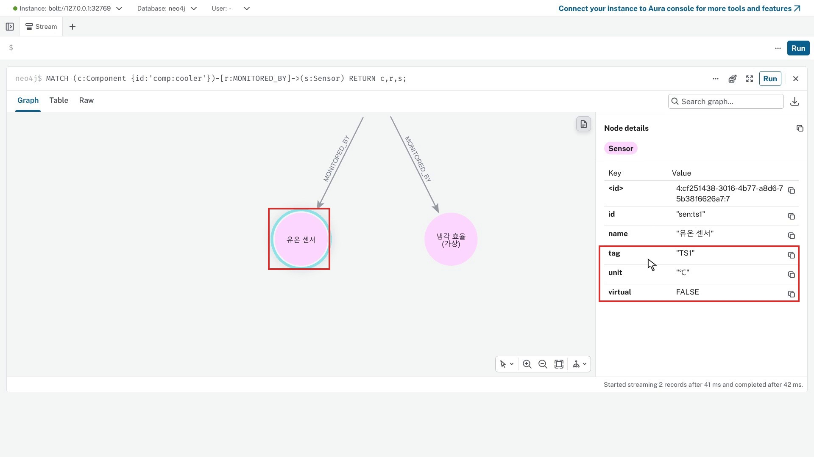
유온 센서의 태그와 단위 · 누르면 크게 보기빈 곳을 눌러 선택을 풀고 MONITORED_BY 화살표를 클릭하세요.
오른쪽이 Relationship details로 바뀝니다. 쿨러에서 센서로 향하는 관계이며 배관의 흐름을 뜻하지 않습니다.
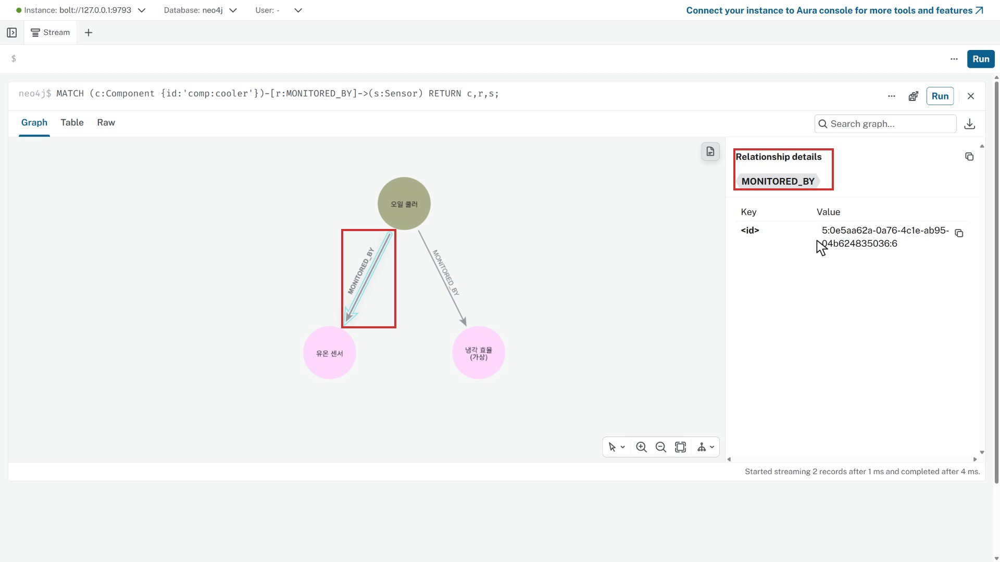
노드 정보와 구별되는 관계 정보 · 누르면 크게 보기12 센서에서 물리량까지 따라가기
센서가 무엇을 관측하는지 보려고 설비에서 물리량까지 경로를 넓힙니다. 입력칸에 :clear를 넣고 Enter를 눌러 앞 카드를 비운 뒤 다음 문장을 실행하세요.
Neo4j Browser 입력 칸
MATCH p=(a:Asset {code:'HYD-01'})-[:HAS_COMPONENT]->(c:Component)
-[:MONITORED_BY]->(s:Sensor)-[:OBSERVES]->(v:StateVariable)
RETURN p;
센서가 연결된 구성요소 3개에서 관측 경로 5개가 이어집니다. 결과는 노드 14개 · 관계 13개입니다.
빈 곳을 누르고 Zoom to fit을 누른 뒤 유온 센서 아래의 유온을 클릭하세요. 센서와 물리량 노드를 구분해 읽습니다.
유온은 StateVariable, id는 sv:ts1입니다. 단위 ℃, normal=48, limit=65는 등록된 기준이며 현재 측정값이 아닙니다.
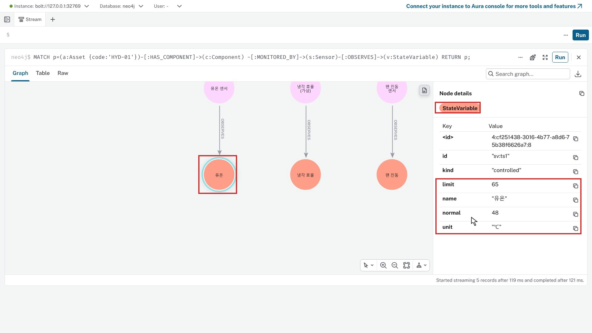
유온 노드를 클릭해 등록된 기준 확인 · 누르면 크게 보기13 질문에 맞춰 조건과 반환값 바꾸기
앞 경로에서 질문에 필요한 줄기와 값만 골라냅니다. 이번에는 카드를 비우지 않고 다음 문장을 실행합니다. 아래에 남은 이전 그림과 비교하기 위해서입니다.
Neo4j Browser 입력 칸
MATCH p=(a:Asset {code:'HYD-01'})-[:HAS_COMPONENT]->(c:Component)
-[:MONITORED_BY]->(s:Sensor)-[:OBSERVES]->(v:StateVariable)
WHERE s.tag = 'TS1'
RETURN p;
HYD-01 → 오일 쿨러 → 유온 센서 → 유온의 경로만 남습니다. 노드 4개 · 관계 3개입니다. 다른 센서를 삭제한 것이 아닙니다.
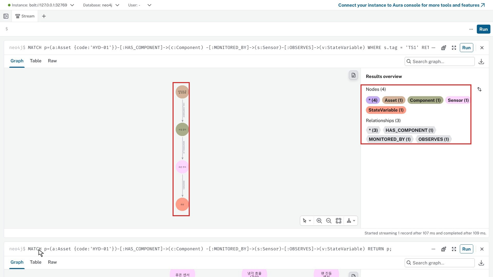
TS1 조건으로 좁힌 경로 · 누르면 크게 보기같은 경로에서 필요한 속성만 받아 표로 비교합니다.
Neo4j Browser 입력 칸
MATCH p=(a:Asset {code:'HYD-01'})-[:HAS_COMPONENT]->(c:Component)
-[:MONITORED_BY]->(s:Sensor)-[:OBSERVES]->(v:StateVariable)
WHERE s.tag = 'TS1'
RETURN c.name AS component, s.tag AS tag, v.name AS quantity,
v.unit AS unit, v.normal AS normal, v.limit AS limit;
TS1·유온·℃·48·65가 한 행에 나옵니다. 방금 클릭한 노드의 값과 대조하세요.
이번에는 전체 관측 경로에서 한계가 등록된 항목만 고릅니다. 입력칸에 :clear를 넣고 Enter를 눌러 앞 카드를 비운 뒤 다음 문장을 실행하세요.
Neo4j Browser 입력 칸
MATCH p=(a:Asset {code:'HYD-01'})-[:HAS_COMPONENT]->(c:Component)
-[:MONITORED_BY]->(s:Sensor)-[:OBSERVES]->(v:StateVariable)
WHERE v.limit IS NOT NULL
RETURN s.tag AS tag, v.name AS quantity, v.unit AS unit, v.limit AS limit
ORDER BY tag;
PS1·TS1·VS1 세 행이 나옵니다. CE·FS1은 한계가 없어 제외됐습니다. null은 0이 아닙니다.
14 교체 부품 가지 탐색하기
구성요소에서 센서가 아니라 부품으로 이어지는 관계를 따라갑니다. 입력칸에 :clear를 넣고 Enter를 눌러 앞 카드를 비운 뒤 다음 문장을 실행하세요.
Neo4j Browser 입력 칸
MATCH p=(:Asset {code:'HYD-01'})-[:HAS_COMPONENT]->(c:Component)
-[:USES_PART]->(part:Part)
RETURN p;
설비 → 장치 3개 → 부품 3개, 노드 7개 · 관계 6개입니다.
빈 곳을 누르고 Zoom to fit을 누른 뒤 쿨러 코어 노드를 클릭해 레이블·이름·품번을 확인하세요.
쿨러 코어는 Part이며 partNo=P-CLR-CORE입니다. 오일 쿨러 장치와 별개입니다. 등록된 사용 관계만으로 현재 재고나 교체 필요를 판단하지 않습니다.
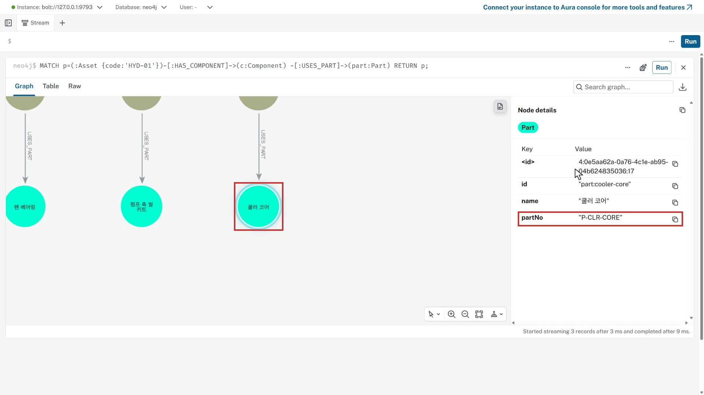
쿨러 코어의 품번 확인 · 누르면 크게 보기15 그림에서 센 수와 집계 비교하기
장치마다 센서가 몇 개인지 먼저 그림에서 세고, 같은 수가 집계로도 나오는지 견줍니다. 입력칸에 :clear를 넣고 Enter를 눌러 앞 카드를 비운 뒤 다음 문장을 실행하세요.
Neo4j Browser 입력 칸
MATCH p=(:Asset {code:'HYD-01'})-[:HAS_COMPONENT]->(c:Component)
-[:MONITORED_BY]->(s:Sensor)
RETURN p;
쿨러·주 펌프·팬 아래 센서를 직접 센 뒤 같은 연결을 집계하세요.
Neo4j Browser 입력 칸
MATCH (:Asset {code:'HYD-01'})-[:HAS_COMPONENT]->(c:Component)
-[:MONITORED_BY]->(s:Sensor)
RETURN c.id AS component_id, c.name AS component,
collect(DISTINCT s.tag) AS tags, count(DISTINCT s) AS channels
ORDER BY channels DESC, component_id;
쿨러 CE·TS1은 2개, 주 펌프 FS1·PS1은 2개, 팬 VS1은 1개입니다. tags 목록의 개수와 channels를 비교합니다.
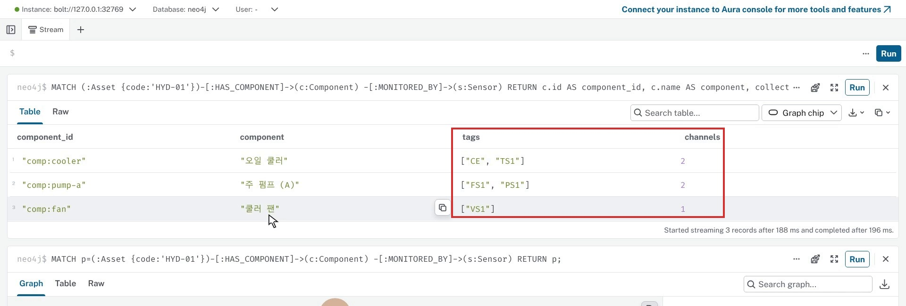
목록과 개수를 함께 확인 · 누르면 크게 보기16 전체 지도에서 정리하고 저장하기
처음의 전체 지도를 다시 열어 지금까지 본 가지의 자리를 확인하고, 그림과 실행한 문장을 저장합니다. 입력칸에 :clear를 넣고 Enter를 눌러 앞 카드를 비운 뒤 다음 문장을 실행하세요.
Neo4j Browser 입력 칸
MATCH p=(a:Asset {code:'HYD-01'})-[*1..3]->(n)
RETURN p;
빈 곳을 누르고 Zoom to fit을 누른 뒤 예비 펌프를 클릭해 노드가 존재함을 확인하세요. 센서 집계에서 빠진 까닭을 전체 지도에서 찾아봅니다.
comp:pump-b 노드는 존재하지만 제공 예제에는 센서로 이어지는 경로가 없습니다. 표에서 빠졌다는 사실과 장치가 없다는 판단은 다릅니다.
상세 창을 접고 빈 배경을 눌러 선택을 푼 뒤 Zoom to fit을 누릅니다. 그래프 오른쪽 위 내려받기 단추(Download as PNG)로 그림을 받으세요.
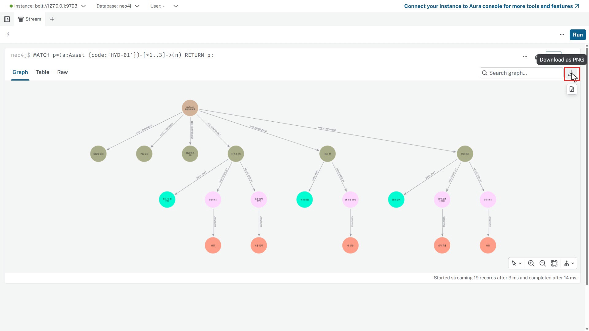
그래프 오른쪽 위 Download as PNG 단추 · 누르면 크게 보기Stream 탭 왼쪽의 패널 단추로 왼쪽 패널을 다시 열고 두 번째 아이콘 Queries를 누릅니다. Stream 탭 옆 +로 새 쿼리 탭을 엽니다.
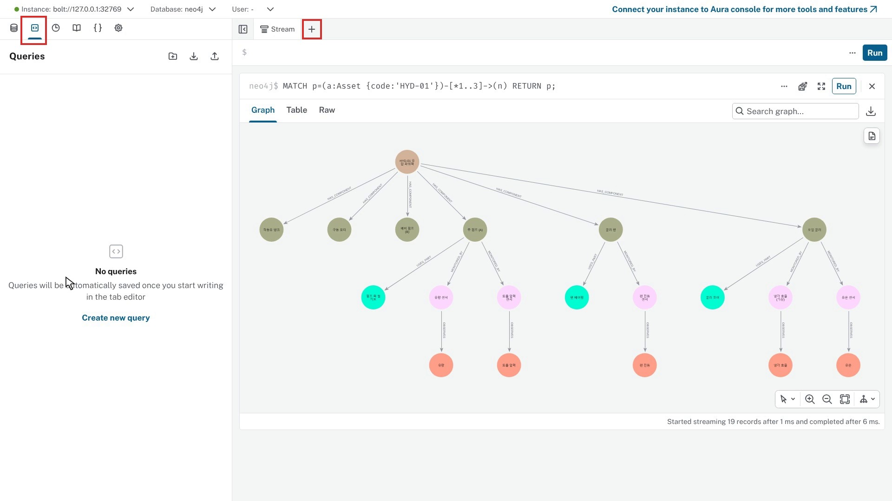
왼쪽 Queries 아이콘과 새 쿼리 탭 단추. 강사 화면의 Drafts에는 먼저 저장해 둔 같은 이름이 하나 있습니다 · 누르면 크게 보기새 탭에 다음 글을 붙여 넣습니다. 첫 줄 // 설비 연결 탐색이 목록에 보이는 이름이 됩니다. 둘째·셋째 줄의 개수와 식별자는 위에서 직접 확인한 값입니다. 내 화면에서 본 값과 다른 줄이 있으면 내가 본 값으로 고칩니다.
Neo4j Browser 새 쿼리 탭에 붙여 넣는 글
// 설비 연결 탐색
// 전체20노드19관계, 쿨러 센서2, 센서 집계 쿨러2 주펌프2 팬1
// 노드 클릭: comp:cooler, sen:ts1, sv:ts1, part:cooler-core
// 전체 설비 지도
MATCH p=(a:Asset {code:'HYD-01'})-[*1..3]->(n)
RETURN p;
// 쿨러 한 개
MATCH (c:Component {id:'comp:cooler'})
RETURN c;
// 쿨러와 센서
MATCH (c:Component {id:'comp:cooler'})-[r:MONITORED_BY]->(s:Sensor)
RETURN c,r,s;
// 설비에서 물리량까지
MATCH p=(a:Asset {code:'HYD-01'})-[:HAS_COMPONENT]->(c:Component)
-[:MONITORED_BY]->(s:Sensor)-[:OBSERVES]->(v:StateVariable)
RETURN p;
// TS1 경로만 선택
MATCH p=(a:Asset {code:'HYD-01'})-[:HAS_COMPONENT]->(c:Component)
-[:MONITORED_BY]->(s:Sensor)-[:OBSERVES]->(v:StateVariable)
WHERE s.tag = 'TS1'
RETURN p;
// TS1 속성 표
MATCH p=(a:Asset {code:'HYD-01'})-[:HAS_COMPONENT]->(c:Component)
-[:MONITORED_BY]->(s:Sensor)-[:OBSERVES]->(v:StateVariable)
WHERE s.tag = 'TS1'
RETURN c.name AS component, s.tag AS tag, v.name AS quantity,
v.unit AS unit, v.normal AS normal, v.limit AS limit;
// 한계가 있는 항목
MATCH p=(a:Asset {code:'HYD-01'})-[:HAS_COMPONENT]->(c:Component)
-[:MONITORED_BY]->(s:Sensor)-[:OBSERVES]->(v:StateVariable)
WHERE v.limit IS NOT NULL
RETURN s.tag AS tag, v.name AS quantity, v.unit AS unit, v.limit AS limit
ORDER BY tag;
// 장치와 교체 부품
MATCH p=(:Asset {code:'HYD-01'})-[:HAS_COMPONENT]->(c:Component)
-[:USES_PART]->(part:Part)
RETURN p;
// 센서 연결과 직접 세기
MATCH p=(:Asset {code:'HYD-01'})-[:HAS_COMPONENT]->(c:Component)
-[:MONITORED_BY]->(s:Sensor)
RETURN p;
// 센서 목록과 집계
MATCH (:Asset {code:'HYD-01'})-[:HAS_COMPONENT]->(c:Component)
-[:MONITORED_BY]->(s:Sensor)
RETURN c.id AS component_id, c.name AS component,
collect(DISTINCT s.tag) AS tags, count(DISTINCT s) AS channels
ORDER BY channels DESC, component_id;
왼쪽 Drafts 아래에 설비 연결 탐색이 생깁니다.
탭 이름 옆 ×로 탭을 닫고, 왼쪽 목록의 설비 연결 탐색을 눌러 다시 엽니다.
작성한 문장과 확인 기록이 그대로 보입니다.
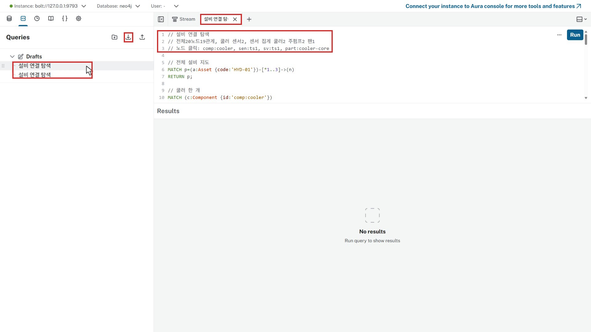
다시 연 쿼리 탭과 Drafts 목록. 강사 화면에는 같은 이름이 두 줄 있습니다 · 누르면 크게 보기이 목록은 지금 브라우저에만 저장돼 있습니다. 학교 컴퓨터는 재부팅하면 초기화되므로, 받은 PNG 그림은 재부팅 전에 USB 또는 개인 클라우드에 옮겨 두세요.